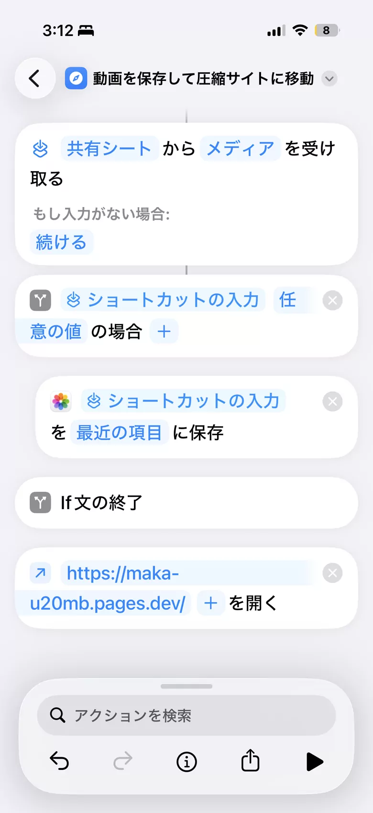
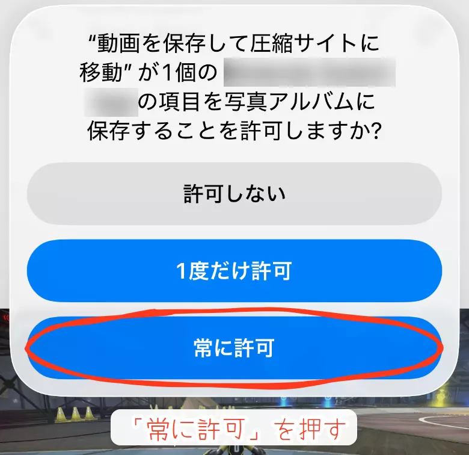
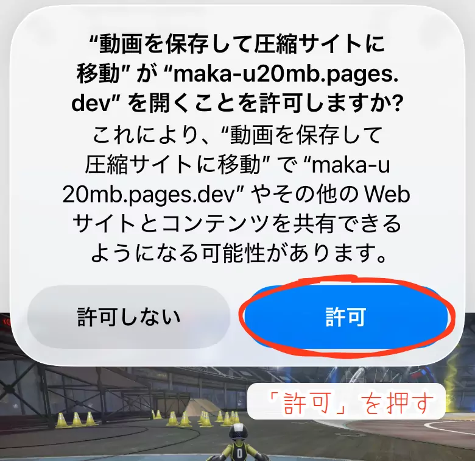
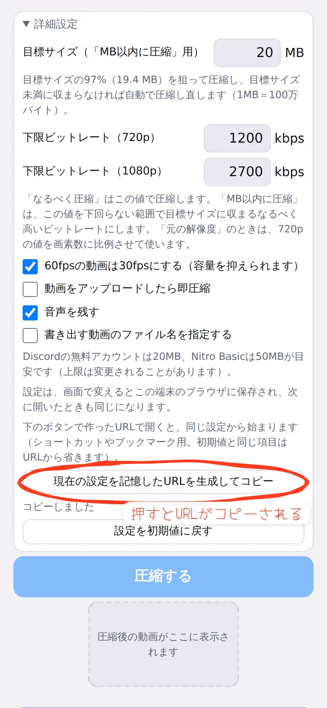
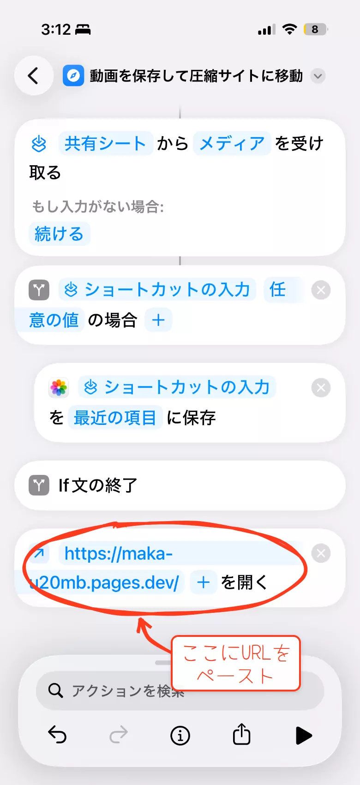

iPhoneのショートカットを併用した使い方
iPhoneのショートカットを併用することで、
- ① 動画を保存
- ② 圧縮サイトを開く
- ③ 圧縮オプションを指定する
を1タップで行うことができます。
1. 使い方の流れ
2. ショートカットを入手する
ショートカットは以下の2つの方法で作成できます。
① iCloudにアップロードしたショートカットを取り込む
下のリンクを押すと取り込めます。
https://www.icloud.com/shortcuts/7386207ca3c140a4b3d74bafb5e07e1b
② ショートカットを写す
アップロードしたショートカットと同一のものです。リンクを踏むのが不安であればこちらで。

3. 初めて実行したとき
iPhoneから2回、許可を求められます。どちらも許可してください。


4. 設定を指定して開く（応用）
ショートカット内のURLにパラメータを付与することで、予め項目を選択した状態にすることができます。

設定を保存したURLをコピーしたら、ショートカットの一番下のURL部分にペーストしてください。

例えば、ショートカットの「URLを開く」に次のURLを入れます。URLに入っていない項目は初期値（720p・20MB以内に圧縮など）になり、前回の設定は使われません。
なるべくサイズを軽くしたいなら（720p・なるべく圧縮）
Discordの上限ギリギリで高画質、さらに動画を選択した後、自動で圧縮を開始したいなら（1080p・20MB以内に圧縮・即圧縮）
画質を保ちつつなるべく軽く、60fpsのまま・音声なしで、ファイル名を「日付_名前_ランダム英数字」にしたいなら（1080p・なるべく圧縮・fpsそのまま・音声なし・ファイル名指定）
（text1= の後ろは「あんたの名前」を URL 用に変換した文字です。自分の名前などに変えて使ってください）